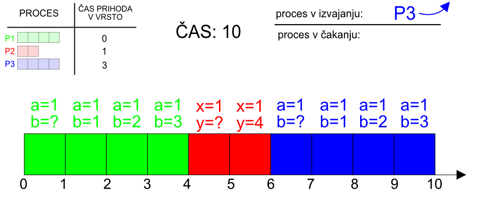
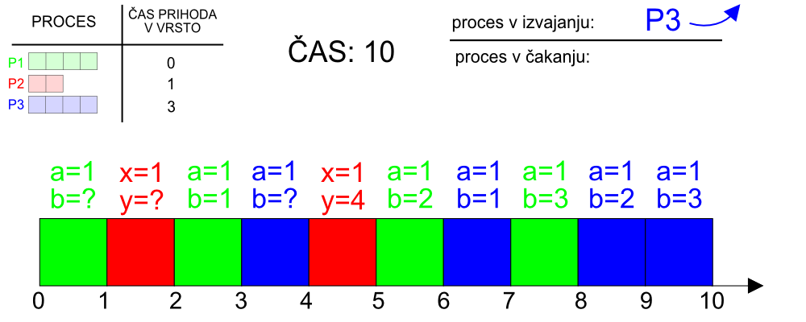

Licenca
To delo je na voljo pod pogoji slovenske licence Creative Commons 2.5:
priznanje avtorstva - nekomercialno - deljenje pod enakimi pogoji.
Celotna licenca je na voljo na spletu na naslovu http://creativecommons.org/licenses/by-nc-sa/2.5/si/. V skladu s to licenco je dovoljeno vsakemu uporabniku delo razmnoževati, distribuirati, javno priobčevati, dajati v najem in tudi predelovati, vendar samo v nekomercialne namene in ob pogoju, da navede avtorja oziroma avtorje in izdajatelja tega dela. Če uporabnik delo predela, kar pomeni, da ga spremeni, preoblikuje, prevede ali uporabi to delo v svojem delu, lahko predelavo dela ponudi na voljo le pod pogoji, ki so enaki pogojem iz te licence oziroma pod enako licenco.

Razvrščanje procesov
Operacijski sistem upravlja s procesi in daje vsakemu procesu občutek, kot da ima celoten sistem na razpolago povsem zase.
Kateri procesi se bodo izvajali, kdaj in koliko dolgo, določa del operacijskega sistema, ki mu rečemo razvrščevalnik (ang. scheduler). Le ta razvršča procese na različne načine. Nekateri od teh načinov so:
1. Prvi pride, prvi melje (ang. FIFO – First In First Out)
Najenostavnejši način razporejanja je kar »prvi pride, prvi melje«. Procesi so razporejeni v vrsto glede na čas prihoda in se tako tudi izvedejo.
Animacija načina »prvi pride, prvi melje« je enaka kot animacija zaporedne obdelave opravil.
 Stanje po zaključenih vseh procesih.
2. Najkrajši najprej (ang. SRT – Shortest Remaining Time)
Način »najkrajši najprej« razporedi procese glede na dolžino. Najprej pridejo na vrsto krajši procesi in nato daljši. Razvrščevalnik mora dobro oceniti, koliko časa bo kakšen proces potreboval, da se zaključi.
Animacija SRT

Hitrost animacije: 5
3. Kroženje (ang. Round-Robin)
Razvrščevalnik priredi vsakemu procesu enak časovni interval in med njimi kroži. Čakalni čas je odvisen le od števila procesov in ne več od njihove dolžine.
Animacija načina kroženja je enaka animaciji večopravilne obdelave opravil.
 Stanje po zaključenih vseh procesih.
Robin v imenu ni Robin Hood, ampak nekdo drug. Kdo in zakaj?